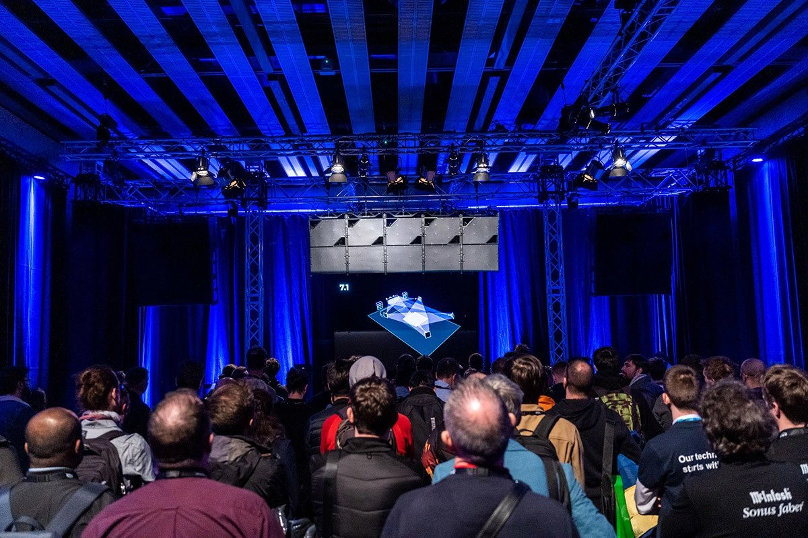

The brief
Bring a new audio technology into a conservative pro-audio market, where some customers loved it and others were against it from the start, and turn interest into qualified leads for sales.
What came of it
Part of the team behind HOLOPLOT’s stand, which won the Medium category at Integrated Systems Europe in Barcelona.
- 250+ leads from every ISE and InfoComm, qualified and passed on to sales.
- 20% more event attendance year on year.
- LinkedIn from about 200 to 19,000 followers, with 30% higher engagement. The data showed that case studies drove far more interaction than other formats, and the company moved its content investment accordingly.
- Promoted to Marketing Events Manager.




HOLOPLOT stands, demos and the X1 Matrix Array. Photos: HOLOPLOT.
The project that defined my time there
Sphere, Las Vegas
Sphere opened on 29 September 2023 with U2. Its sound system, Sphere Immersive Sound, is powered by HOLOPLOT and was developed together with Sphere Studios. It is described as the largest concert-grade audio system in the world.
I saw Sphere while it was still being built and helped make it part of HOLOPLOT’s marketing. I also wrote HOLOPLOT’s case studies together with the product team, up to and including the one on Sphere.
- 1,600
- permanently installed X1 modules, plus 300 mobile ones
- 167,000
- individually amplified loudspeaker drivers
- 17,600
- seats, and 20,000 with the floor open
Other HOLOPLOT projects in my time
- Illuminarium. Immersive venues in Atlanta and Las Vegas with a 360° X1 system. I ran activations around the partnership.
- Lightroom, London. An artist-led immersive venue that opened in January 2023 with a HOLOPLOT X1 system.
- X2. Was part of the launch of the new X2 series, made for places that could not carry the weight of X1.
Decisions that mattered
Let people hear it
Sound has to be heard, so the stand always sent people to a demo room with a set number of demos through the day. It showed what the product could do quickly and made it much easier to convince people. Major artists and tech companies also came to hear X1 and try the software live.
Only the decision-makers
We went after the people who decide: typically FOH and sound engineers and building owners. Segments and content were built around them.
Double down on what worked
When the data showed that case studies outperformed everything else, we gathered more data so we could produce as many case studies as possible.
What I did
- ISE and InfoComm, end to end. Owned two of the AV industry’s largest international trade shows, with 110,000+ visitors combined, from concept and stand to logistics, demo programmes, delivery and follow-up. Briefed and managed stand builders and the event agency.
- Content for the right people. Case studies tailored to each segment (live, experiential and speech) and to the people making the decisions, like FOH and sound engineers.
- Thought leadership. Came up with ideas and scripts for videos and ran webinars where HOLOPLOT’s own engineers and educators taught customers and partners.
- Product content. Wrote the product page and data sheets for HOLOPLOT X1 and every case study up to and including Sphere, together with the product team. Part of the HOLOPLOT X2 launch.
- Software. Launched new software features and updates to existing customers through release notes, webinars and training with the product manager and engineers.
- Women in audio. Helped develop DEI initiatives at HOLOPLOT, because it mattered to me that women have a voice in an industry known for being mostly men. One example was Girls’ Day, when schoolgirls from Berlin spent a day at HOLOPLOT to see what working with software is like.
- Partners and tools. Ran activations around partnerships like Illuminarium, built the website together with an agency and implemented Monday for project management.
Even though she wasn’t my direct manager she was the first person I would go to if I needed clarification or extra help on a task.